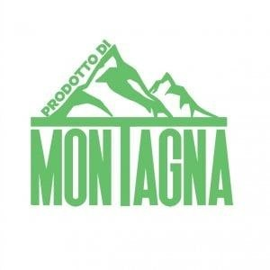
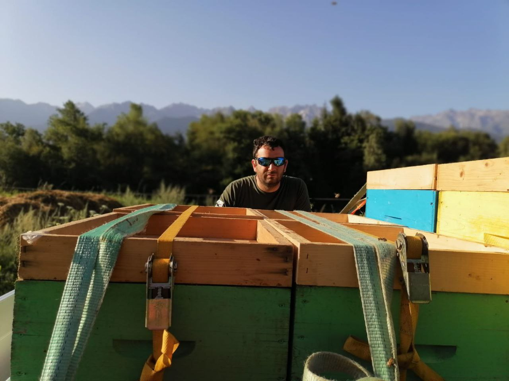
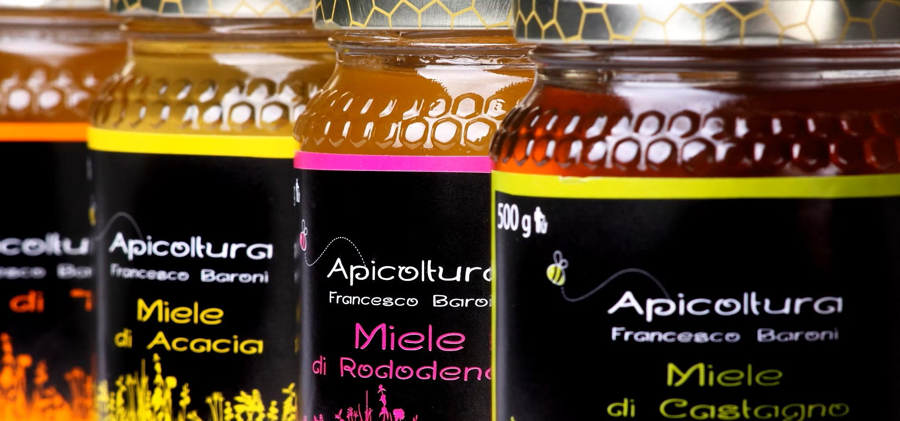

Apicoltura Baroni Francesco
Esclusivamente da pascoli alpini


Sono Francesco Baroni, zootecnico e apicoltore in Valtellina.
Lavoro in un contesto montano, dove clima, fioriture e altitudine danno origine a mieli autentici, legati al territorio.
Sono socio conferitore di CONAPI, principale cooperativa apistica europea.
Il miele è esclusivamente di mia produzione, senza acquisti o miscelazioni di prodotto di terzi.Il marchio “Prodotto di Montagna” valorizza origine, ambiente e qualità dei mieli. La produzione è stagionale e limitata ai quantitativi realmente ottenuti.
Prodotto dai pascoli valtellinesi a primavera ed in estate.
Delicato e chiaro.
Profumo intenso.
Ambrato e intenso.
Raro e di alta quota.
Apicoltura Baroni Francesco
Via Molini 10
23026 Ponte in Valtellina (Sondrio)
Partita IVA 00843770140
francesco.baroni.fb@gmail.com
(+39) 3290624159
